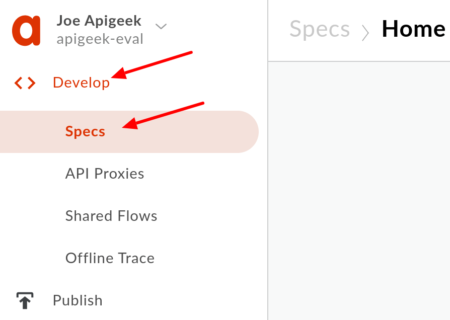

An OpenAPI Specification uses a standard format to describe a RESTful API. Written in either JSON or YAML format, an OpenAPI Specification is machine readable, but is also easy for humans to read and understand. The specification describes such elements of an API as its base path, paths and verbs, headers, query parameters, operations, content types, response descriptions, and more. In addition, an OpenAPI Specification is commonly used to generate API documentation.
On Apigee Edge, OpenAPI specifications are used as documentation for APIs. The developer portal uses specifications to provide live documentation for app developers. In addition, specifications can be used to generate API proxies.
What you'll learn
- How to import an OpenAPI specification into an Apigee Edge organization
- The basic structure of an OpenAPI specification
- How to generate an API proxy using an OpenAPI specification
- How to use the Apigee proxy trace tool
What you'll need
- An Apigee Edge evaluation org. It is not recommended to use a paid or team organization for these labs -- you can create your own evaluation org here.
- The OpenAPI specification for the Retail API backend
Use case
You have a requirement to create an externally-accessible API to access a backend retail API. Since your backend API team has provided you an OpenAPI specification, you will use this to generate a new proxy. This new proxy will be the starting point for our new retail API.
- Import an OpenAPI specification.
- Create a new passthrough API proxy from the OpenAPI specification using the proxy wizard.
- Explore the resulting proxy code, and trace the proxy.
- Modify the imported specification to reference your proxy.
Log into your Apigee org.
Click on Develop, and then click on Specs:

Create a new spec by clicking on +Spec and then selecting Import URL:
We are going to use a backend specification to build the skeleton of our proxy. You may often need to create the frontend specification from scratch. We will edit this imported specification to document our frontend proxy API.
Enter the name and URL to be used for the specification.
Import Name:
retail-v1
Import URL:
https://raw.githubusercontent.com/apigeekdemos/api-eng-training-resources/master/resources/specs/retail-backend.yaml
Click on Import.
Click on the spec name:
When the spec editor opens, you will see the YAML OpenAPI specification on the left:
You'll also see live documentation on the right:
Changes made to the YAML spec on the left will immediately be reflected in the documentation on the right.
Explore the live documentation and OpenAPI spec. Let's try to make an API call using the live documentation.
Click on the /categories box to expand the panel.
Click on "Try it out."
Click on Execute.

You should see a successful response.
Notice that the documentation is calling the backend directly. After we generate the proxy, we will change the specification to point to our proxy, not the backend.
Now you'll generate an API proxy using the specification. Click on Develop and then click on API Proxies. Now click "+Proxy" to start the proxy wizard:
You will be creating a Reverse Proxy, using your OpenAPI specification as the source. Click the "Use OpenAPI" button:
Click on your retail-v1 spec, and then click Select:
You'll see the OpenAPI specification URL. Click on Next:
Change the Proxy Name field to:
retail-v1
Change the Proxy Base Path field to:
/retail/v1
Change the description. After these changes, click Next:

Next you will see a list of operations that were found in the OpenAPI spec. You'll keep all of these operations. Leave them all checked, and click Next:
We will be adding authorization and CORS later. Select the Pass through radio button, and then click Next:
Next you'll select the virtual hosts. Evaluation organizations have two virtual hosts: default (http) and secure (https). Anything sent via http will go across the network in plain text. In general you don't want this to happen. Deselect the default virtual host, leaving the secure virtual host selected, and click Next:
Now you can select your deployment environments. Since you haven't made any changes to or tested this proxy yet, it wouldn't make sense to deploy it to production. Make sure that only test is selected, and then click "Build and Deploy":
You should see your proxy being generated and deployed. Once it has completed, click on the retail-v1 link:
You will see the summary page. This is revision 1 of the retail-v1 proxy.
Explore the menus. The Project dropdown allows you to do things like save the proxy as a new proxy, save as a new revision, download the revision, delete the proxy, or view the history. The Revision dropdown will show the revisions for the proxy, as well as the revisions that are deployed to different environments. The Deployment dropdown allows you to deploy or undeploy the current revision for an environment.
Click on the Develop tab:
Here you can see the proxy that has been generated. Note the conditional flows that have automatically been created for each of the spec operations. You can see these conditional flows in the proxy endpoint in the Navigator on the left, as well as the corresponding configuration in the proxy endpoint in the Code window on the right:
You will be updating these conditional flows in later labs. For now, let's test that the proxy is working. Click on the TRACE tab and start the trace.
Send a request to the backend by adding "/categories" to the URL in the Send Requests box and clicking "Send":
You should see a transaction for this request in the left box. When the transaction is selected, you'll see a trace of the request and response through Apigee. You should see a 200 Status code in this case, if your backend URL was set correctly in the proxy creation wizard. Click on the last circle as shown in the screenshot -- this shows the response that is being returned to the caller. Explore other elements in the trace as well:
Note that the Send Requests box is just an easy way to create a GET request for your proxy. However, you cannot add headers to or change the verb of the request. All traffic traveling through your proxy is traced, though, during a trace session. Therefore, you can make requests via any REST API tool, such as curl, httpie, or Postman.
We will now modify our OpenAPI specification to reference our proxy.
Return to the Specs page.
Click on the retail-v1 spec:
This specification is currently set up for the backend, and we need to change it for our proxy API.
Change the first 15 lines to be something like this:
openapi: "3.0.0"
info:
version: 0.0.1
title: Retail API v1
description: Retail API
contact:
name: Joe Apigeek
email: apigeek@example.org
url: https://example.org
license:
name: MIT
url: https://opensource.org/licenses/MIT
servers:
- url: "https://apigeek-eval-test.apigee.net/retail/v1"
description: Retail API v1
Change the information as desired. The one field you must change is the url. The line should change to this:
- url: "https://MYORG-test.apigee.net/retail/v1"
where MYORG is changed to your org name (include the "-eval" for evaluation orgs). Be sure to change the end of the URL as well to "/retail/v1" to match the proxy base path.
On the right side, click the "/categories" bar and try the call. You should again see a successful response. You can open another window into the UI and trace your proxy if you'd like to see the call go through.
If you click on the first circle, you can see the request. Note that the Referer header indicates the call came from the specs page.
You have imported an OpenAPI specification for a retail backend, and created and deployed an API proxy based on that specification. You have also verified that requests are being proxied by your API proxy before being sent to the retail backend.